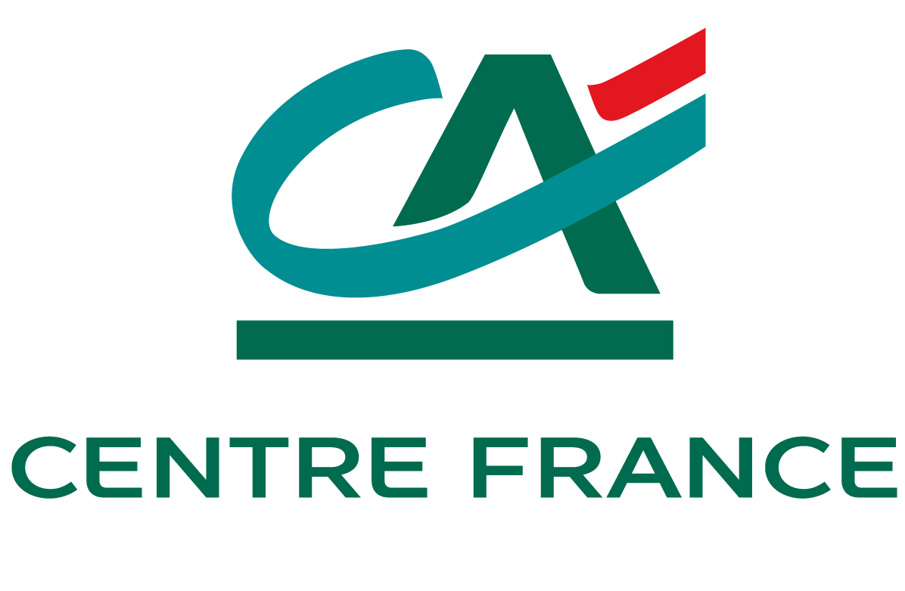
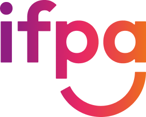

Google Ateliers Numériques
Google Ateliers Numériques
Application web · JavaScript
Maison & Marché
Tableau de bord immobilier autour d'une adresse française, avec repères issus des ventes DVF et données publiques.
Développeur back-end à Clermont-Ferrand (63), je conçois et fais évoluer des applications et services web. Mon parcours associe le développement en agence et dans le secteur bancaire à une expérience de formateur en informatique. Je travaille notamment avec PHP, Symfony, les API web et les bases de données SQL.
Claude et GitHub Copilot font partie de mon quotidien, sur mes projets professionnels comme personnels.
Technologies et outils : PHP · API web · SQL · Git / GitHub · Ubuntu

Crédit Agricole Centre France - Clermont-Ferrand (63) Mission en régie · Développeur back-end · 100 % chez le clientTechnologies et outils : Symfony · Angular · GitLab CI/CD · environnements de serveurs cloud

IFPA - Miribel (01) Formateur en informatique · CDDTechnologies et outils : Symfony · PHP · SQL · Git / GitHub · HTML / CSS
Technologies et outils : PHP · JavaScript · API web · SQL · Git · open source / Ubuntu
Technologies et outils : PHP · JavaScript · HTML / CSS · SQL · Git · open source / Ubuntu
Technologies et outils : HTML · CSS · outils de gestion de versions · open source / Ubuntu
Parcours Web / multimédia et webmaster · site d'Aubière (63) · Mention assez bien.
Domaines : analyse des besoins · conception et maquettage · interfaces adaptatives · développement front-end et back-end · bases de données · services web · multimédia et gestion de sites
Technologies étudiées : PHP · HTML / CSS · JavaScript · SQL · Symfony
Diplôme universitaire de technologie · site d'Aubière (63).
Domaines : algorithmique et programmation · programmation orientée objet · conception et maintenance logicielle · modélisation et interrogation de bases de données · développement d'applications · projets en équipe
Option Informatique et sciences du numérique (ISN) · Mention bien.
Domaines : informatique et initiation à la programmation · algorithmique · sciences de l'ingénieur · analyse et modélisation de systèmes techniques
Certification Google Ateliers Numériques, obtenue en février 2019.
Domaines : présence numérique · création de sites web · référencement naturel · publicité en ligne · réseaux sociaux · marketing mobile · mesure d'audience et analyse de résultats
Quelques projets personnels disponibles en ligne ou sur GitHub.
Tableau de bord immobilier autour d'une adresse française, avec repères issus des ventes DVF et données publiques.
Tableau de bord pour analyser un classeur Excel; les données sont traitées dans le navigateur, sans envoi à un serveur.
Tableau de bord privé et auto-hébergé pour suivre des transactions et estimer la performance d'un portefeuille en euros.